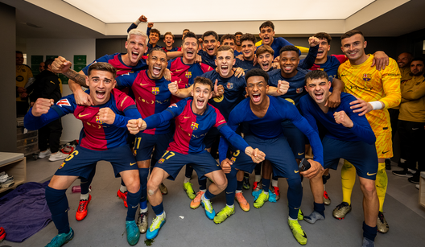
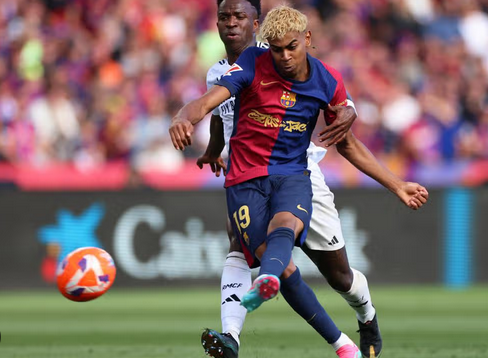
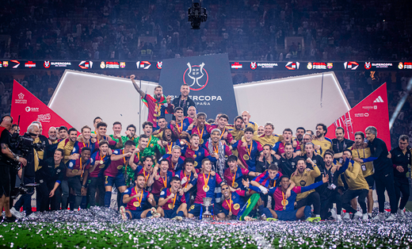
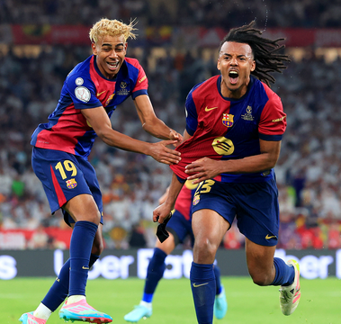
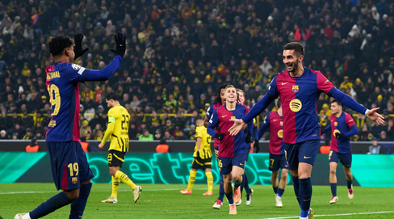

Top 10 Millors Partits del Barça 2024/25
-
Real Madrid 0-4 FC Barcelona (LaLiga)
Exhibició al Santiago Bernabéu amb gols de Lewandowski (2), Lamine Yamal i Raphinha.  -
FC Barcelona 4-3 Real Madrid (LaLiga)
Clàssic espectacular al Lluís Companys amb remuntada i màgia de Raphinha i Yamal.
 -
FC Barcelona 5-2 Real Madrid (Supercopa d’Espanya)
Títol per als culers a l'Aràbia amb domini absolut i gran plantejament de Flick.
 -
FC Barcelona 3-2 Real Madrid (Copa del Rei)
Final decidida a la pròrroga; un nou títol nacional per al palmarès.
 -
Borussia Dortmund 2-3 FC Barcelona (Champions League)
Triomf clau a Alemanya en un dels camps més complicats d’Europa.
 -
Benfica 4-5 FC Barcelona (Champions League)
Partit boig a Lisboa amb festival de gols i passi a vuitens assegurat.

-
FC Barcelona 4-0 Borussia Dortmund (Champions - Quarts)
Golejada a casa que va deixar l’eliminatòria quasi resolta.

-
FC Barcelona 3-3 Inter de Milà (Champions - Semifinals)
Gran intensitat i empat que va deixar tot obert per a la tornada.

-
FC Barcelona 2-0 RCD Espanyol (LaLiga)
Derbi decisiu on el Barça es va proclamar campió matemàticament.

-
FC Barcelona 4-1 Bayern de Munic (Champions League)
Triomf contundent davant un rival històric amb hat-trick de Raphinha.